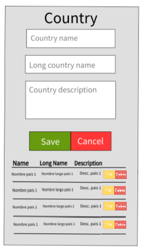

Update operation
The update operation is one of the most complex operations because it is divided in two steps:
- Fill the form with the information to be changed
- Modify the existing information with the new one
Please follow
the instructions bellow, based on the previous form created:
- Add the functionality for Edit when you press the edit button, following the algorithm described bellow:
- Identify which row was clicked. (Similar how it was done in the delete algorithm.)
- Having the the index of the row clicked go and find the information in the javascript
variable which was used to draw the table.
- Fill all the form's fields with the information gotten from the ponit mentioned before
- Create a mechanism to specify that a modification is beign executed for following steps. (A
boolean global variable can be used to achieve this.)
- Collect and validate all the form's information. (Identify if you can reuse some existing code from
the create. )
- Change the save's algorithm to identify if the operation is a create or a edit. Move the existing
code to the create path, only the one which is exclusive for creation
- In the path of edit operation, Delete the entry that is beign edited (The one used to fill the edit form).
- Save the new information collected from the edit form
- Update the table with the new information (The way you did it when the page is loading the first time)
- Show a toastr informing the results of the operation
